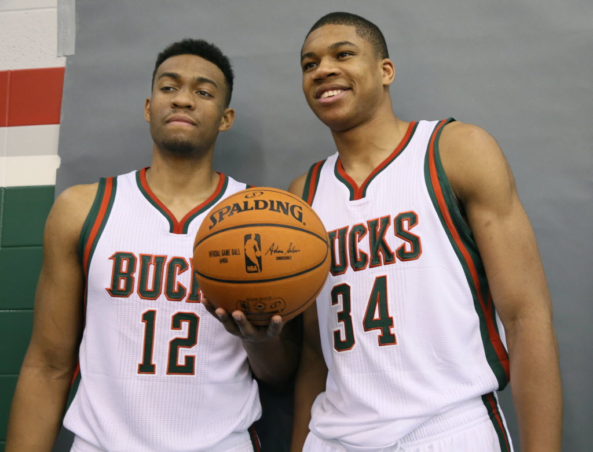

The Milwaukee Bucks are an American professional basketball team based in Milwaukee, Wisconsin. The Bucks compete in the National Basketball Association (NBA) as a member club of the league's Eastern Conference Central Division. The team was founded in 1968 as an expansion team, and play at the Fiserv Forum. Former U.S. Senator Herb Kohl was the long-time owner of the team, but on April 16, 2014, a group led by billionaire hedge fund managers Wesley Edens and Marc Lasry agreed to purchase a majority interest in the team from Kohl, a sale which was approved by the owners of the NBA and its Board of Governors one month later on May 16.The team is managed by Jon Horst, the team's former Director of Basketball Operations, who took over for John Hammond in May 2017.
Senator Herb Kohl was the long-time owner of the team, but on April 16, 2014, a group led by billionaire hedge fund managers Wesley Edens and Marc Lasry agreed to purchase a majority interest in the team from Kohl
Senator Herb Kohl was the long-time owner of the team, but on April 16, 2014, a group led by billionaire hedge fund managers Wesley Edens and Marc Lasry agreed to purchase a majority interest in the team from KohlSenator Herb Kohl was the long-time owner of the team, but on April 16, 2014, a group led by billionaire hedge fund managers Wesley Edens and Marc Lasry agreed to purchase a majority interest in the team from Kohl